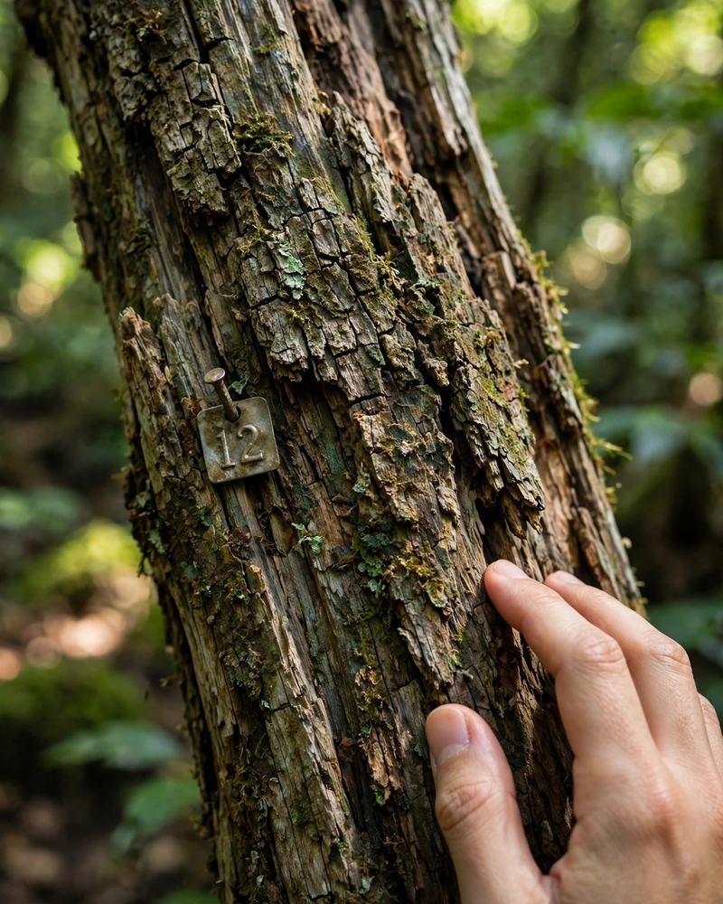
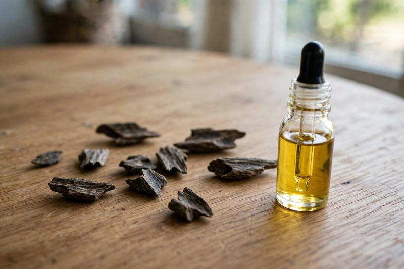

如何分辨真假沉香？先看这 3 点

先说结论：真沉香必须同时满足两条
按 LY/T 2904-2017《沉香》，天然沉香的定义有两个条件，缺一不可：具备沉香源植物组织原本的构造；所分泌物在结香过程中自然生成、无外来添加。
注油、压缩、人工重组都会改变木质部原始构造，显微镜下看得出来。第一眼很“漂亮”的料，反而要多看一眼。

第一点：看成分，沉香四醇是红线
正规检测会测几个核心指标，其中最关键的是沉香四醇含量需 ≥0.1%，这是判定真结香的关键红线之一。再配合醇浸出物、挥发油含量和密度测定，判断等级和沉水与否。
天然沉香的色酮类物质与倍半萜类物质比值应小于 1，人工沉香则大于 1。看报告先看这三行，再看检测依据是不是 LY/T 2904-2017。没有成分数据的“保证是真的”，等于没说。
第二点：看构造，纹理和油线会说话
不用仪器，肉眼也能先筛一遍：油线自然不规则，深浅不一，有断续；木质纹理还在，油脂和木质交错；颜色棕褐为主，深浅过渡自然。太整齐、太黑、像画上去的油线，通体漆黑发亮的颜色，都要警惕泡油和染色。
手串还要看珠孔：孔口干净、内壁能看到木质是正常的；孔口有胶、油渍、黑色残留，基本就是动过手脚。

第三点：查证书，一物一证才算数
证书只看两件事。第一，证书编号能不能和你手里这件对应上：照片、克重、编号三者一致，才叫一物一证。批量通用证书、货证分离，是行业常见套路。第二，出报告的机构有没有 CMA（中国计量认证）和 CNAS 认可。CMA 证明报告有法律效力，CNAS 证明能力符合国际标准。
说清楚边界：检测证书只做材质鉴定，确认是不是瑞香科沉香属，不评定产地、等级、沉水、野生还是种植、商业价值。产区和等级要结合溯源和实物看，第三方不背这个。
三个最常见的坑，别踩
沉水 = 真的？不对。沉水只说明密度大，压缩料、注油料也能沉水。浮水也不等于假，很多好沉香是沉水浮。
越黑越好？不对。太黑发亮反而可能是泡油或染色。天然沉香颜色深浅不一。
有证书 = 一定真？不对。要看证书是不是一物一证、机构有没有 CMA、编号能不能查到。套证比没证更会骗人。
对照表
| 看什么 | 天然沉香常见表现 | 要警惕的表现 |
|---|---|---|
| 油线 | 自然不规则，深浅不一，有断续 | 太整齐、太黑，像画上去的 |
| 纹理 | 木质纹理还在，油脂和木质交错 | 木纹被盖住，表面像塑料 |
| 颜色 | 棕褐为主，深浅过渡自然 | 通体漆黑发亮，或发红发紫 |
| 珠孔 | 孔口干净，内壁能看到木质 | 孔口有胶、油渍、黑色残留 |
自查清单
记住这几点
- · 3 个硬指标：沉香四醇 ≥0.1% + 醇浸出物 + 挥发油
- · 2 个必查项：一物一证 + CMA 机构
- · 3 句话避坑：不只看沉水，不只看颜色，不只信口头保证
边界说明：本文讲的是初筛方法，不是最终鉴定结论。最终结论以具备 CMA 资质的机构检测报告为准。